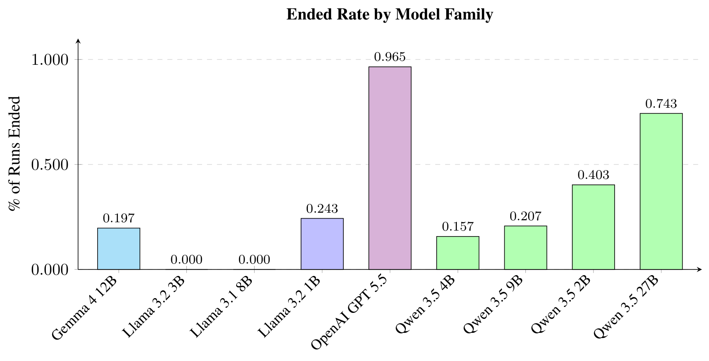
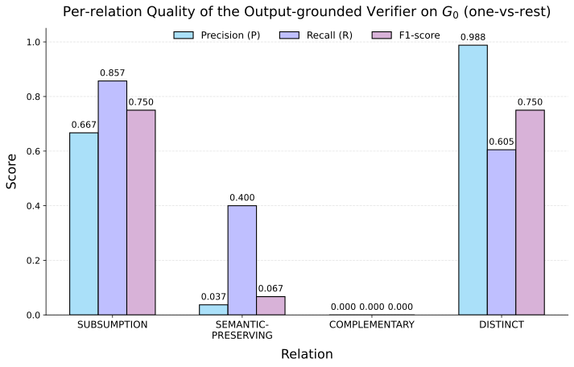
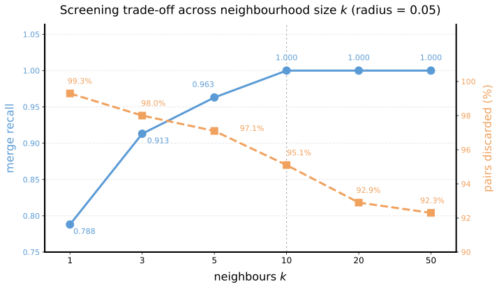
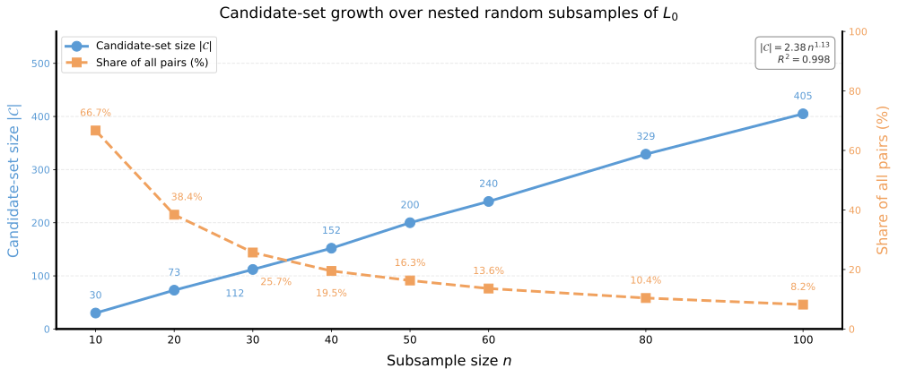
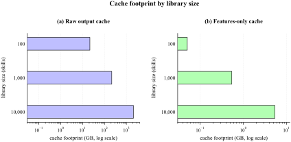

Modern vision-based agents have shifted toward skill-based problem-solving, where a skill is an executable image-to-image operation, e.g., cropping, thresholding, or edge detection. As these skill libraries grow, they accumulate duplicated, mislabeled, and defective skills. The signals normally used to curate them (a skill's name, description, or source code) say little about how the skill visually changes the image. We present VisCurate, a framework and benchmark that curates visual skill libraries from observed execution rather than from text. VisCurate runs each candidate skill pair on a shared probe battery and assigns one of six behavioral relations, each tied to a library edit that is safe to make. The benchmark injects seven defect types into a clean library at controlled rates, producing 300 reproducible instances with ground-truth relations and repairs. While text baselines accept up to five of six false merges on hard negatives, our verifier accepts none and recovers 51.2% of the pairs that are truly mergeable. On two real, uncurated libraries, VisCurate finds that 92% of the skills a package shares with its downstream copy are redundant, while execution confirms only 10 of 17 published equivalence claims. The curation problem also remains open, as the strongest of the nine automated curators recovers only about half of the repairs. We emphasize that visual skill libraries should be curated by behavior, not by description.

Figure 1. Overview of the VisCurate pipeline. (a) A noisy seed skill library is evaluated through an output-grounded equivalence verifier, which executes candidate skills on shared probes and certifies their behavioral relations from the resulting outputs. (b) These verified relations guide the structural edits proposed by the curation agent, which are validated before updating the library. The process repeats until a compact and organized skill library is produced.
A visual skill is a deterministic function that transforms an input image into an output image. Similar descriptions can hide different outputs, causing a silent merge, while different implementations can behave identically, causing a missed consolidation. VisCurate therefore compares the executed outputs instead of the descriptors. Because most skills are parameterized, it never compares at a single operating point: it evaluates both skills over a matched parameter grid on a probe battery \(x_1, \dots, x_m\) and aggregates by the worst case,
\[ D(s_a,s_b)=\max_{\theta\in\Theta^{\mathrm{grid}}}\;\frac{1}{m}\sum_{i=1}^{m} d\Big(\phi\big(f_{s_a}(x_i,\theta)\big),\,\phi\big(f_{s_b}(x_i,\theta)\big)\Big), \]where \(\phi\) canonicalizes the outputs. The worst case is what blocks spurious merges between skills that coincide on part of their domain: a Gaussian blur and a box blur agree at small kernels but diverge at large ones, and the max over the grid surfaces that divergence rather than averaging it away.
Each ordered pair receives exactly one relation. The classifier is hierarchical and stop-at-first: it evaluates relations cheapest-and-strictest first and returns the first that holds, so a stronger, more actionable relation is never masked by a weaker one.
| Check | Relation | Certified when (from outputs only) | Permits |
|---|---|---|---|
| 1 | =Exact | Outputs are identical across the battery at every shared parameter setting, up to a negligible L∞ tolerance. | Merge |
| 2 | ≈Perceptual | Human-indistinguishable: worst-case LPIPS below τpc, with an SSIM floor guarding LPIPS blind spots. | Merge |
| 3 | ⊆Subsumption | Directional: some setting of one skill reproduces every setting of the other, e.g., a fixed-angle rotation inside rotate-by-degrees. | Parameterize |
| 4 | ≡Semantic-preserving | Not pixel- or perceptually identical, but in the same region of DINO feature space, e.g., two edge detectors. | Parameterize, never merge |
| 5 | ≠Distinct | The default verdict by elimination, including spatial-extent mismatches with no subsumption certificate. | Keep separate |
| Abstain | ?Uncertain | The deciding distance clears a calibrated threshold too narrowly (within a band δ). | Human review |
| Advisory | ⊕Complementary | The pair composes into a meaningful pipeline, e.g., dilation and erosion, confirmed by an executed composition test. | Advisory only |
A corrupted library is the environment of a curation agent, here a frozen language model used as-is. The agent proposes actions from a fixed set; every structural edit takes effect only if the verifier certifies a relation that permits it, and the library is left unchanged otherwise.
| Group | Action | Meaning |
|---|---|---|
| Consolidate | merge | Merge redundant skills |
| parameterize | Fold a specialization into a more general parameterized skill | |
| Refine | modify | Modify metadata/schema or function behavior |
| add | Add a new skill | |
| remove | Remove a skill | |
| split | Split one skill into multiple skills | |
| Control | retrieve | Retrieve/query a skill |
| end | Stop the episode |






@inproceedings{ishraq2027viscurate,
title = {{VisCurate}: Evaluating Behavioral Equivalence of Visual Skills},
author = {Ishraq, Md Farhan and Ishmam, Md Farhan and Joarder, Reaz Hassan and Kabir, Md Hasanul},
booktitle = {Proceedings of the IEEE/CVF Winter Conference on Applications of Computer Vision (WACV)},
year = {2027}
}We thank Didhiti Nahid for her helpful feedback on an earlier draft of this paper. Md. Farhan Ishraq, in particular wants to thank his parents, Md. Shah Alam and Afia Khatun Mily, for everything.